Análise completa da plataforma app.yuv.com.br (instância white-label “TelecomTrack”): todas as 22 telas, regras de negócio e dinâmica de cada funcionalidade — mapeadas para implementação no jimi_webhook.
O YUV é uma plataforma multi-tenant de rastreamento de ativos com telemetria de vídeo (MDVR/ADAS/DMS). Diferente de um rastreador GPS tradicional, o núcleo do produto é a gestão de ocorrências de comportamento do motorista capturadas por câmeras com IA (distração, uso de celular, sem cinto…), com um fluxo de tratativa, classificação de risco e configuração por cliente. O restante — rastreamento ao vivo, relatórios, cadastros e comandos — sustenta essa operação. Os modelos de equipamento vistos (JC371, JC400D, JC450) são dashcams/MDVR da própria Jimi, o mesmo ecossistema que o nosso jimi_webhook integra.
jimi_webhook já cobre a base (rastreamento ao vivo, ativos, clientes, comandos, vídeo, usuários, relatórios genéricos). O que o YUV tem a mais — e é onde está o valor competitivo — se concentra em 4 frentes:
A sidebar organiza tudo em 4 blocos: itens principais no topo e três grupos sanfona (Vídeos, Relatórios, Cadastros). O cabeçalho global mostra o contador de frota On/Off e o seletor de perfil (revendedor × cliente).
//tracking/bi/occurrences/dashboard/commands/report-export/streaming/playback/downloads/positions/movement/outdated/alarms/occurrences/assets/sim-cards/customers/devices/permission-groups/drivers/occurrence-settings/usersComparação com o estado atual do jimi_webhook (rotas em handlers/router.php). Legenda:
Já temos
Parcial
Novo
| Funcionalidade YUV | Situação no jimi_webhook | Prioridade |
|---|---|---|
| Dashboard de Ocorrências (DMS) — risco, tratativa, auto-refresh | Novo recebemos pushalarm, mas não há camada de ocorrência | Alta |
| Relatório de Ocorrências — falso positivo, situação, 55 tipos de alarme | Novo | Alta |
| Configurações de Ocorrências — motor de regras por cliente | Novo | Alta |
| Relatório de Alarmes — grade filtrável + export | Parcial em /relatorios | Alta |
| Vídeo: Ao Vivo / Playback / Downloads | Parcial temos /video genérico | Alta |
| Equipamentos — OTA firmware, importação em lote, periféricos, rotação/marca d'água streaming | Parcial temos /config + /devicemodels | Alta |
| Rastreamento — clientes × ativos, ignição, mapa | Já temos /live | Manter |
| Resumo — KPIs, heatmap, distribuição de velocidade, séries temporais | Parcial /dashboard | Média |
| Relatórios: Posições / Deslocamento / Desatualizados | Parcial | Média |
| Exportar Relatórios — fila assíncrona PDF/Excel | Novo | Média |
| Motoristas — CNH/toxicológico, FaceID, identificador | Novo | Média |
| Chips (SIM) — operadora, ICCID, vínculo IMEI | Novo | Média |
| Grupos de Permissões — RBAC por tipo (revendedor/cliente) | Parcial temos require_admin | Média |
| BI — gerador de análises sob demanda | Novo | Baixa |
| Clientes — config ocorrência/checklist + impersonação | Parcial /clientes | Média |
| Usuários — abas Minha Empresa / Meus Clientes | Já temos /usuarios | Melhorar |
| Comandos — histórico + polling de status | Já temos /comandos | Manter |
É o coração do produto e a maior lacuna nossa. A cadeia de valor é: o dispositivo gera um alarme de câmera → uma regra decide se ele vira “ocorrência” → a ocorrência entra numa fila de tratativa com classificação de risco → o operador trata (valida, marca falso-positivo, resolve).
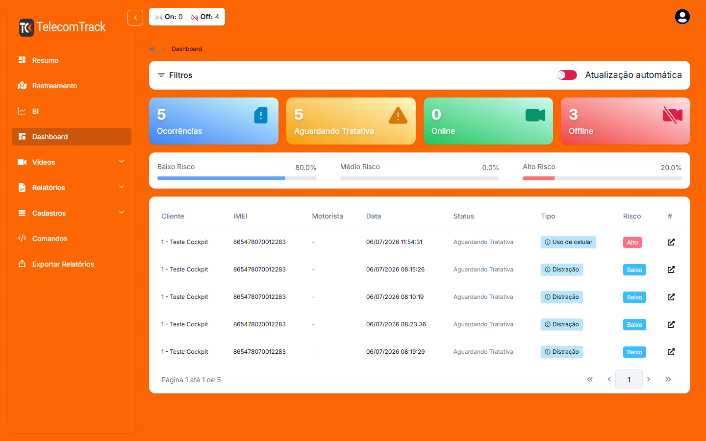
Painel operacional de gestão de eventos DMS. Quatro cartões de topo (Ocorrências, Aguardando Tratativa, Online, Offline), uma barra de distribuição de risco (Baixo/Médio/Alto em %) e a grade de ocorrências com ação de abrir cada caso.
Aguardando Tratativa é o estado inicial (fluxo de workflow, não só um log)./commandstatus).occurrences (id, customer_id, imei, driver_id, alarm_type, risk, status, created_at, treated_by, treated_at, falso_positivo) alimentada a partir do handler pushalarm.php após aplicar a regra do cliente./ocorrencias + AJAX /ocorrenciasdata reaproveitando o padrão de polling do commandstatus.php para o “Atualização automática”.layout_base.php (cartões hairline). Barra de risco = 3 faixas coloridas somando 100%.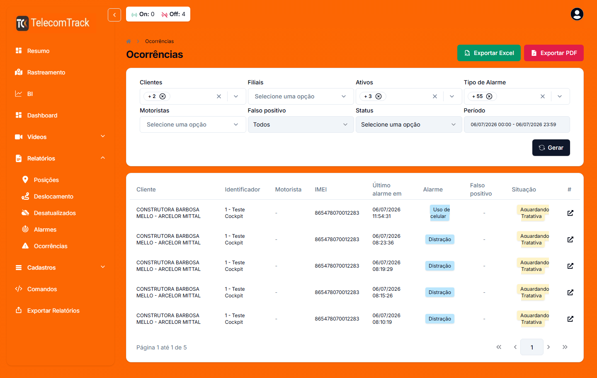
Versão analítica/histórica do dashboard, com filtro poderoso e exportação. É aqui que se audita e fecha as tratativas.
alarm_types (código Jimi → rótulo PT-BR → risco padrão) — reaproveitável nos módulos A1/A3/A4.falso_positivo booleano + auditoria de quem marcou.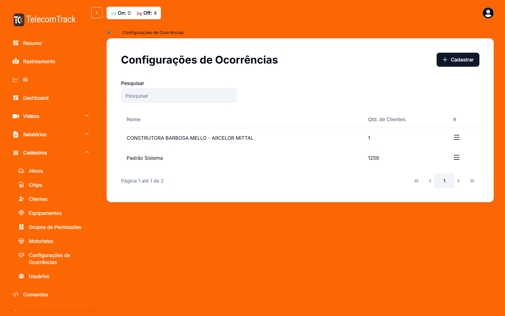
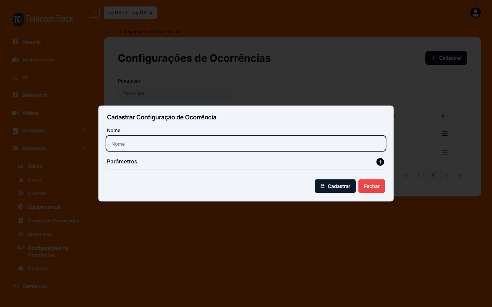
Esquerda: perfis de configuração por cliente. Direita: formulário (Nome + Parâmetros dinâmicos “+”).
Define quais alarmes viram ocorrência e com qual risco/tratamento. Cada perfil é aplicado a N clientes — note o perfil “Padrão Sistema” com 1.259 clientes e um perfil dedicado ao cliente “CONSTRUTORA BARBOSA MELLO”.
occurrence_configs (id, nome, is_default) e occurrence_config_params (config_id, alarm_type, gera_ocorrencia, risco, limiar). FK customers.occurrence_config_id.pushalarm.php: resolver o config do cliente do device → aplicar parâmetro do tipo de alarme → criar/agrupar ocorrência. É o ponto de integração central de todo o Bloco A./comandos).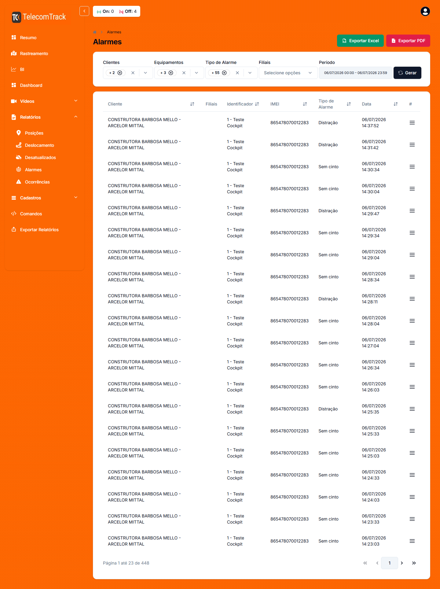
A camada crua, antes da regra de ocorrência: todos os alarmes recebidos. No teste, 448 alarmes em um dia (23 páginas) — tipos “Distração” e “Sem cinto” dominam.
pushalarm.php; falta a tela de consulta com esses filtros e export. Estender o atual /relatorios com uma aba “Alarmes”.O YUV separa o vídeo em três fluxos distintos. Hoje temos /video genérico + AJAX /mediadata//camerasdata; vale reestruturar nesses três.
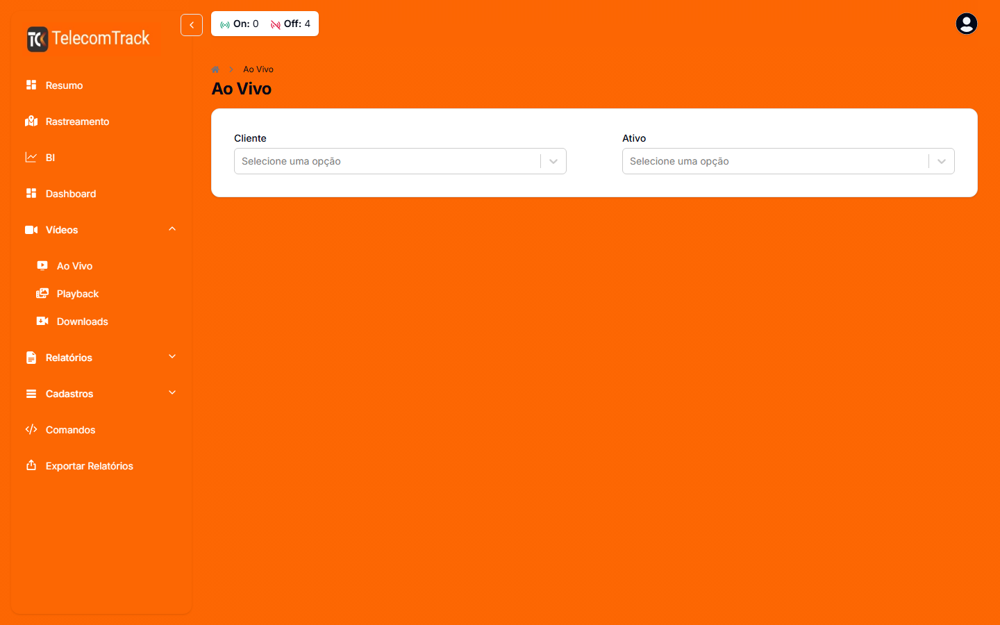
Transmissão ao vivo das câmeras. Fluxo enxuto: escolher Cliente → Ativo e o player abre os canais do MDVR.
/video num /video/aovivo com seleção cliente→ativo→canal e o stream (HLS/RTMP conforme a API Jimi).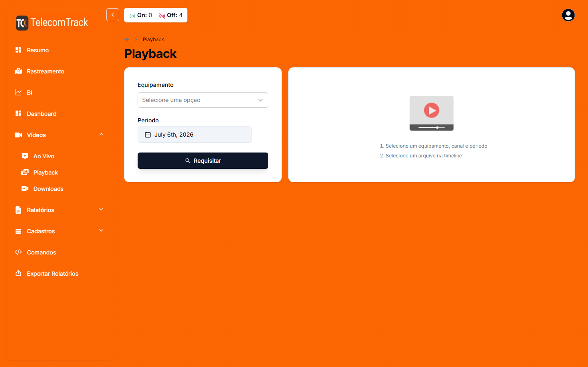
Reprodução de vídeo gravado no cartão do MDVR. Fluxo em 2 passos explícitos: 1) selecionar equipamento, canal e período → Requisitar; 2) escolher um arquivo na timeline.
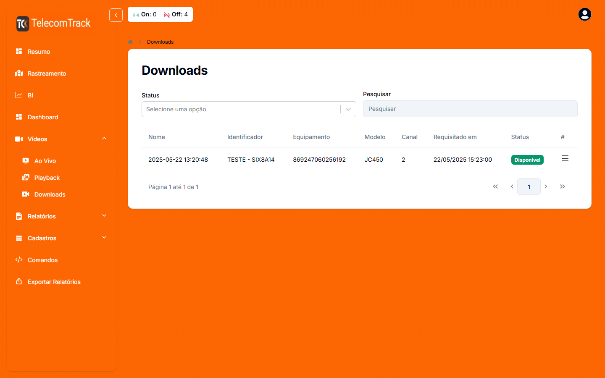
Fila de extração de vídeos do device para o servidor. Colunas: Nome, Identificador, Equipamento (IMEI), Modelo, Canal, Requisitado em, Status (ex.: Disponível).
video_downloads (imei, canal, período, status, url, requested_by). O webhook pushfileupload.php/pushftpfileupload.php que já temos é exatamente quem fecha esse job (device → FTP → status “Disponível”).WebhookHandler.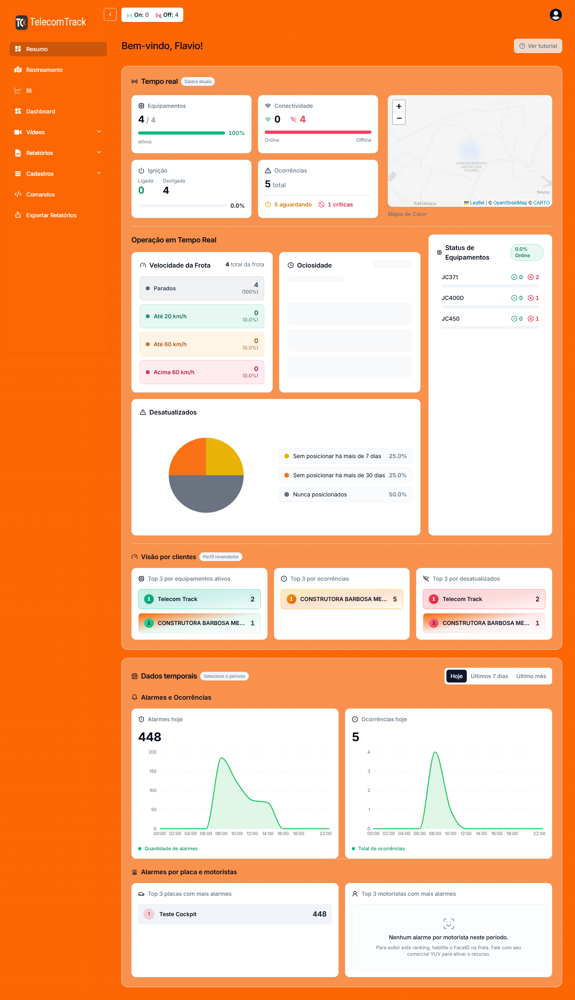
Home com visão 360° da operação. Muito mais rico que o nosso /dashboard atual.
/dashboard com cartões de tempo real (reuso de /trackdata, /hbdata) e as séries temporais de alarmes/ocorrências (depende do Bloco A).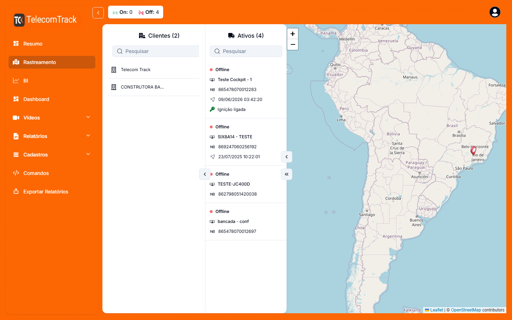
Mapa Leaflet com dois painéis laterais: Clientes e Ativos (busca em cada). Cada ativo mostra status Offline/online, nome, IMEI, última posição (data/hora) e estado da ignição.
/live — é o que já temos mais alinhado. Melhoria possível: chip de ignição e “tempo desde a última posição”./live; adotar o layout de duas colunas (cliente/ativo) e os selos de ignição/última-posição como referência visual.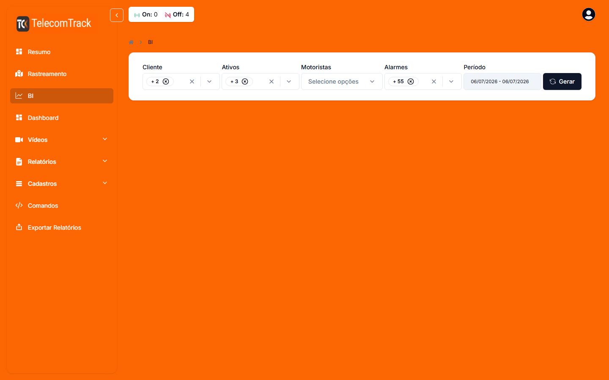
Gerador de análises sob demanda: filtra Cliente, Ativos, Motoristas, Alarmes (55), Período e “Gerar” monta gráficos analíticos. Tela em branco até gerar (carga controlada).
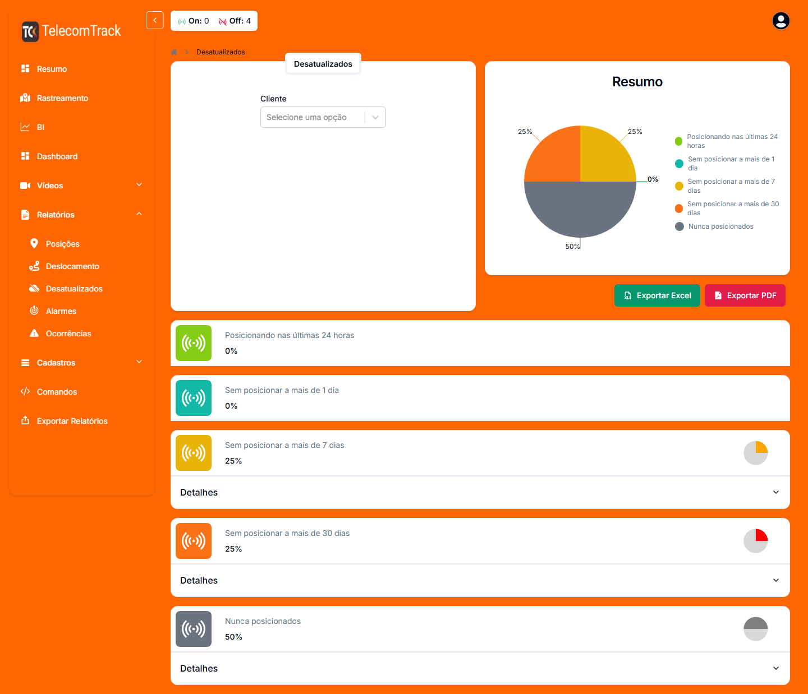
Saúde de posicionamento da frota, em faixas de tempo: posicionando nas últimas 24h, sem posicionar >1d, >7d, >30d e nunca posicionados. Cada faixa tem “Detalhes” + export.
NOW() - last_position_at; “nunca posicionados” = device cadastrado sem nenhuma posição (útil para pós-venda/instalação).pushgps). Ótimo indicador operacional de baixo custo.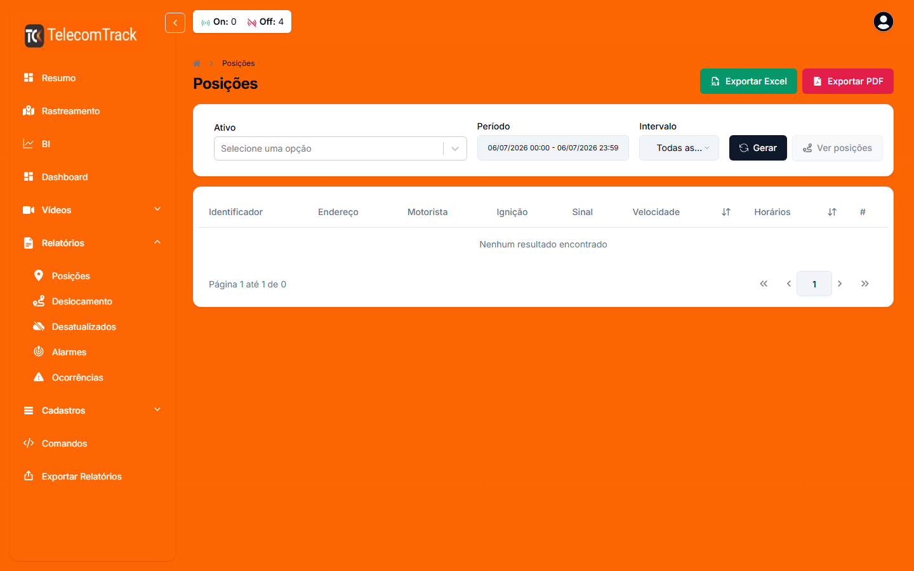
Histórico de posições de um ativo em um período. Colunas: Identificador, Endereço (geocodificação reversa), Motorista, Ignição, Sinal, Velocidade, Horários. Botão “Ver posições” plota no mapa.
pushgps). Falta a grade com endereço geocodificado (cache de reverse-geocoding para não repetir chamadas) e o “Ver no mapa”.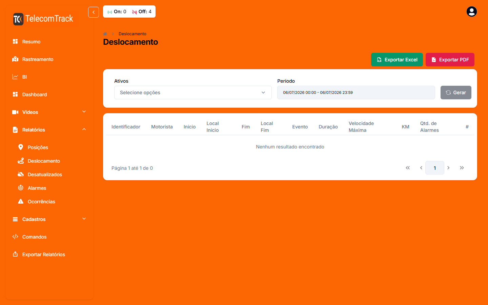
Consolida posições em viagens/trechos. Colunas: Identificador, Motorista, Início / Local Início, Fim / Local Fim, Evento, Duração, Velocidade Máxima, KM, Qtd. de Alarmes.
pushgps/pushhb). Persistir trips para consulta rápida.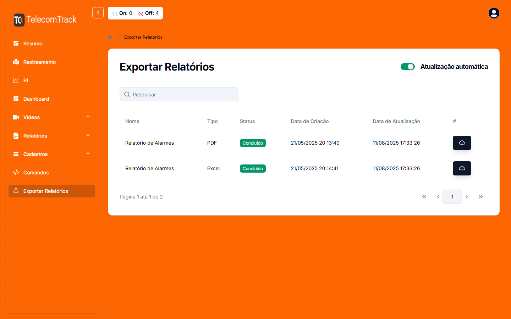
Central de geração assíncrona de relatórios pesados. Colunas: Nome, Tipo (PDF/Excel), Status (Concluído), Data de Criação, Data de Atualização, botão de download. Toggle “Atualização automática”.
commandstatus).report_jobs (nome, tipo, status, path, params, created_at). Um worker (cron) gera o arquivo; a UI faz polling. Encaixa no nosso padrão assíncrono (fastcgi_finish_request + processamento em background).Todos seguem o mesmo padrão de CRUD (grade + Pesquisar + Cadastrar + Exportar Excel + menu de ações por linha). Destaco abaixo apenas o que agrega regra de negócio nova.
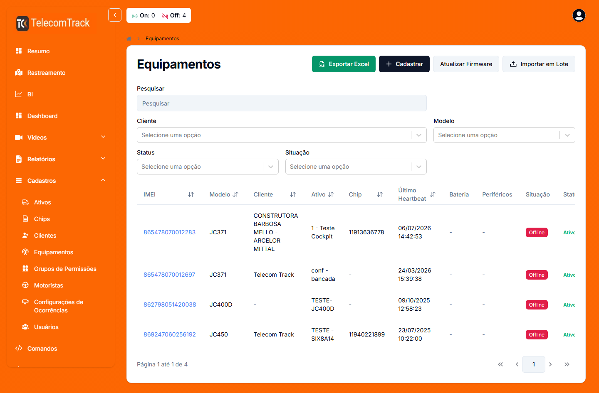
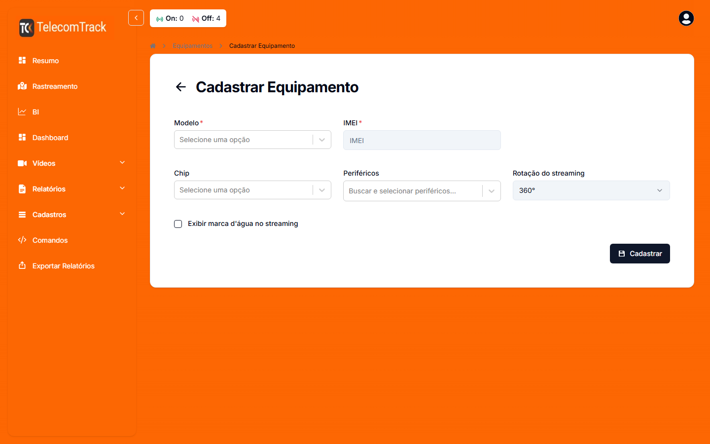
Grade de equipamentos e o formulário de cadastro (Modelo, IMEI, Chip, Periféricos, Rotação do streaming, marca d'água).
O cadastro mais estratégico. Grade com IMEI, Modelo, Cliente, Ativo, Chip, Último Heartbeat, Bateria, Periféricos, Situação (Online/Offline), Status (Ativo).
/config + /devicemodels e recebemos heartbeat (pushhb) e lista de recursos (pushresourcelist). Estender o cadastro com Chip, periféricos, rotação e marca d'água.Inventário de SIM cards. Colunas: Operadora (Claro, Vivo, Allcom…), Número, ICCID, IMEI vinculado.
sim_cards (operadora, numero, iccid, imei nullable). CRUD simples reaproveitando o padrão de /ativos.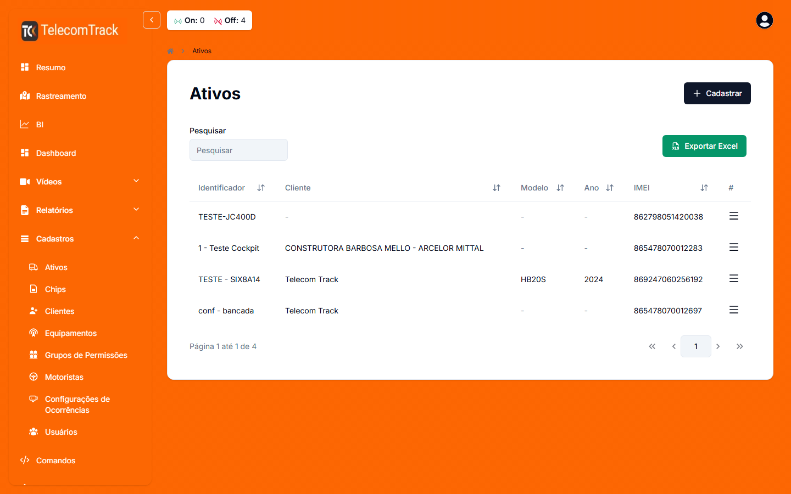
Cadastro de veículos/ativos: Identificador, Cliente, Modelo, Ano, IMEI. Equivale ao nosso /ativos.
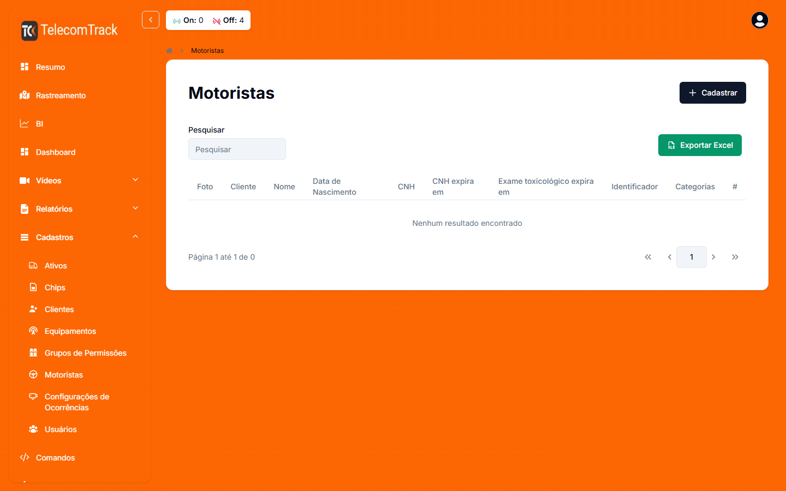
Cadastro de motoristas com compliance. Colunas: Foto, Cliente, Nome, Data de Nascimento, CNH, CNH expira em, Exame toxicológico expira em, Identificador, Categorias.
drivers + rotina de alerta de vencimentos. O FaceID/identificação é o elo que dá valor total ao Bloco A (atribuição de ocorrências por motorista).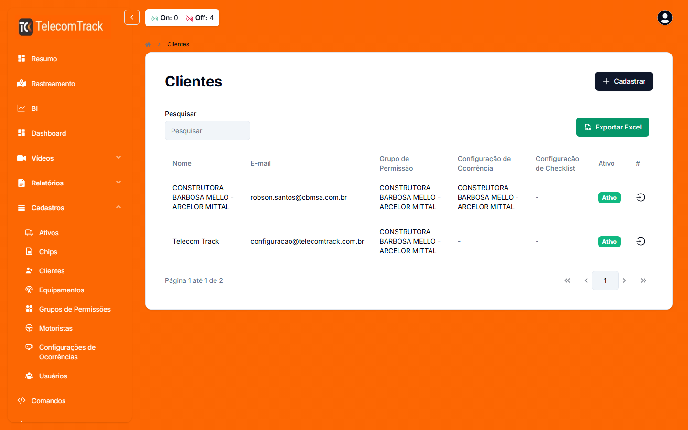
Cadastro de clientes (tenants). Colunas relevantes: Grupo de Permissão, Configuração de Ocorrência, Configuração de Checklist, Ativo, e um ícone de impersonação (“entrar como” o cliente).
/clientes e set_customer_context(). Adicionar FK para occurrence_config e um botão de impersonação seguro (registrar em log quem impersonou quem).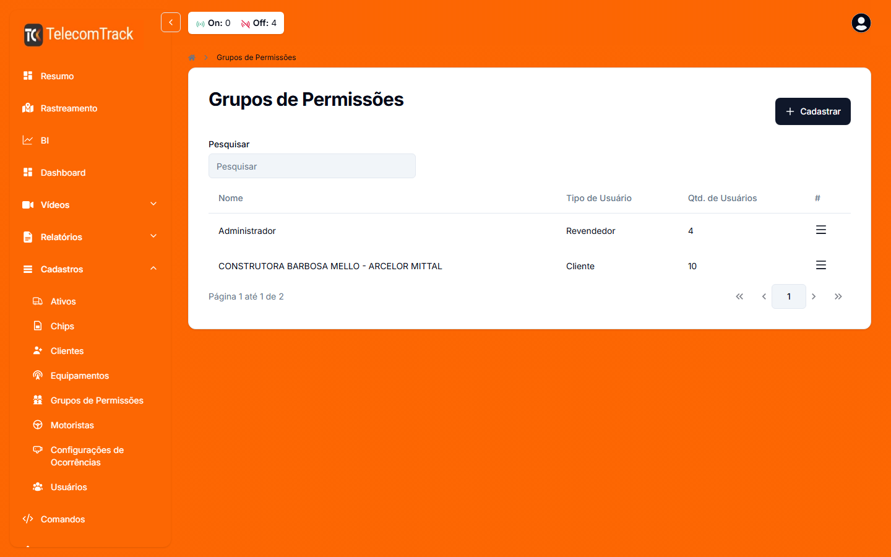
RBAC. Colunas: Nome, Tipo de Usuário (Revendedor × Cliente), Qtd. de Usuários.
require_login/require_admin (binário). Evoluir para grupos com matriz de permissões e o eixo revendedor×cliente — habilita as visões “por clientes” do Resumo.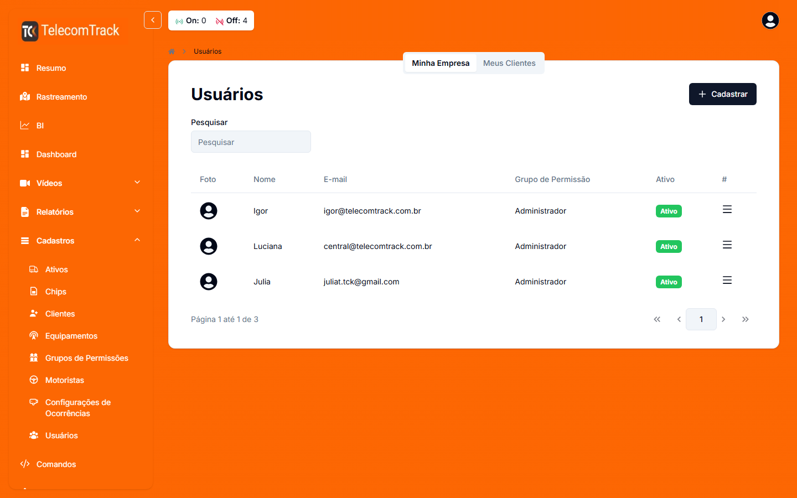
Gestão de usuários com abas “Minha Empresa” × “Meus Clientes” — separa quem administra a operação de quem são usuários dos clientes atendidos. Colunas: Foto, Nome, E-mail, Grupo de Permissão, Ativo.
/usuarios. Adotar as duas abas (segmenta usuários próprios × usuários dos clientes) e o vínculo com Grupos de Permissão (E6).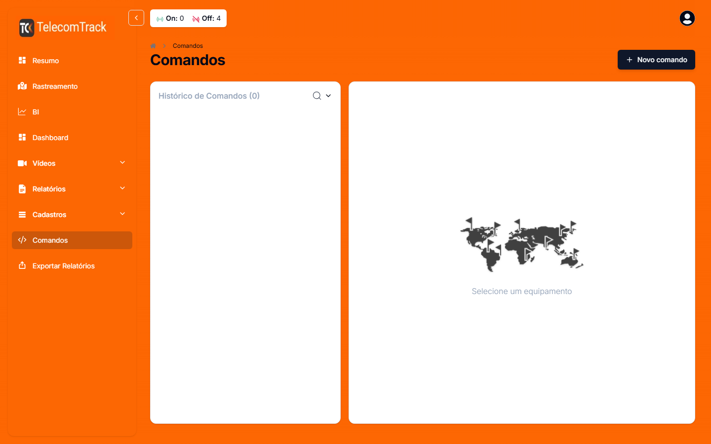
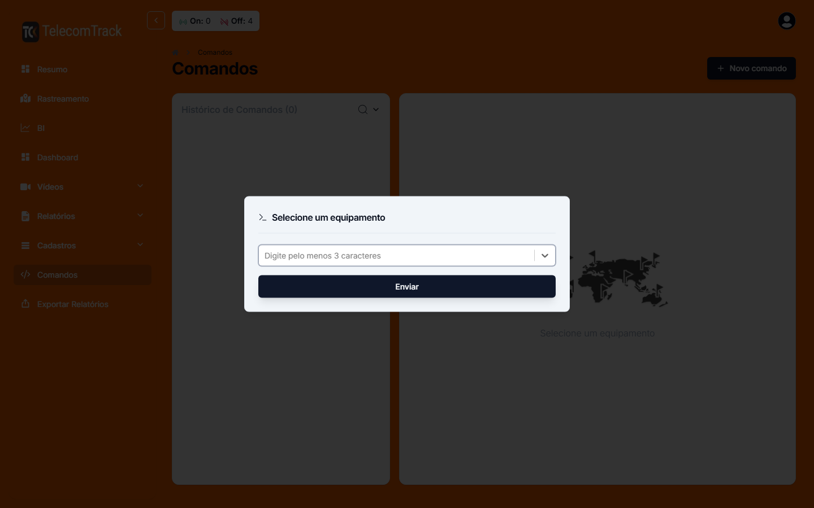
Tela de comandos (histórico + seleção de equipamento) e o modal “Novo comando”.
Envio de comandos ao device com Histórico de Comandos à esquerda e a área do equipamento à direita. “Novo comando” exige selecionar o equipamento (mín. 3 caracteres na busca) antes de liberar os comandos.
/comandos + /sendcommand + polling /commandstatus.Ordenado por valor competitivo × esforço, aproveitando o que o jimi_webhook já tem (pipeline assíncrono, comandos, webhooks Jimi).
| Fase | Entrega | Depende de | Por quê |
|---|---|---|---|
| 1 | Motor de Ocorrências (A3) + tabelas occurrences/alarm_types + integração no pushalarm.php | — | Núcleo do produto; tudo do Bloco A depende disto |
| 2 | Dashboard de Ocorrências (A1) + Relatório de Ocorrências (A2) + Alarmes (A4) | Fase 1 | Materializa o valor DMS para o operador |
| 3 | Vídeo estruturado: Ao Vivo / Playback / Downloads (B1–B3) | pushfileupload já existe | Diferencial de telemetria de vídeo; encaixa no pipeline assíncrono |
| 4 | Equipamentos avançado (E1): OTA, importação em lote, periféricos, streaming | Canal de comandos | Escala operacional (provisionamento + manutenção de frota) |
| 5 | Relatórios: Posições, Deslocamento, Desatualizados + Exportação assíncrona (D1–D3) | Fase 1 (p/ Qtd. alarmes) | Relatórios que os clientes cobram; reuso do padrão de fila |
| 6 | Cadastros de apoio: Chips (E2), Motoristas+FaceID (E4), Grupos de Permissão (E6) | — | FaceID completa a atribuição de ocorrências por motorista |
| 7 | Resumo enriquecido (C1) + BI (C3) + Clientes/Usuários refinados (E5/E7) | Fases 1–6 | Camada de visão executiva sobre os dados já capturados |
customer_id atual.